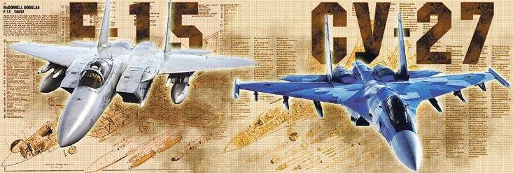
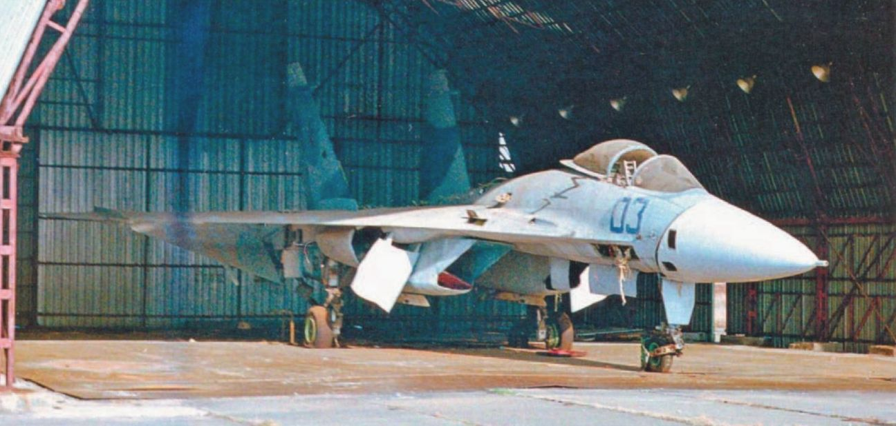
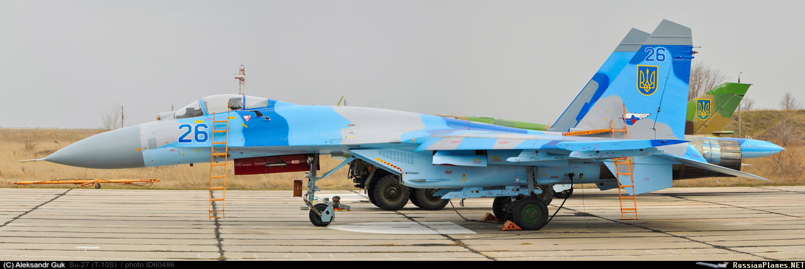
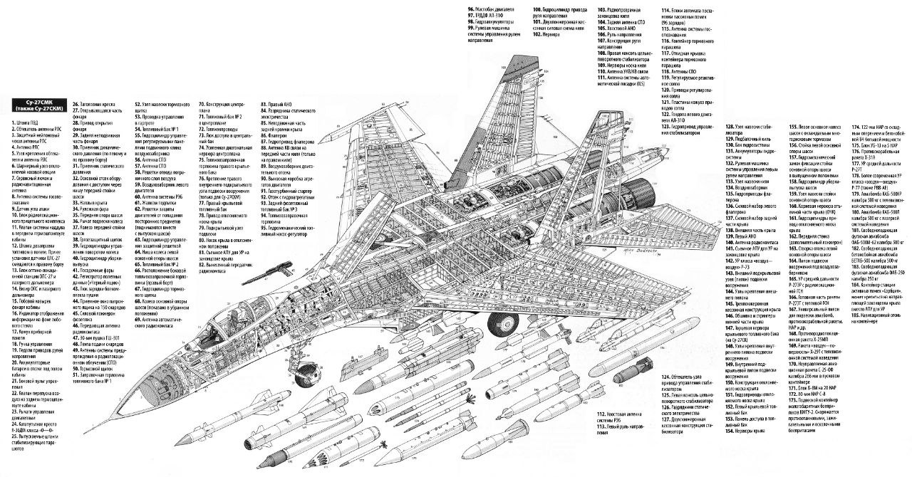

В кінці 1960-х в ряді країн почалась розробка перспективних винищувачів четвертого покоління. Першими до розв'язання цієї проблеми приступили в США, де ще в 1965 році було поставлено питання по створенню наступника тактичного двомісного винищувача F-4 Phantom II. В березні 1966 року там була розгорнута програма «Експериментального винищувача» (англ. FX - Fighter Experimental). Після уточнення вимог щодо майбутнього літака, у 1969 році почалося його проєктування, тоді ж літак отримав позначення «F-15», де «F» означає винищувач (англ. Fighter). В тендерному конкурсі брали участь передові авіабудівні компанії США: «McDonnell Douglas», «Норт Амерікан», «Northrop» та «Ріпаблік». Переможцями «McDonnell Douglas», яким 23 грудня 1969 було видано контракт на будівництво дослідних літаків, а в 1974 році з'явились перші серійні винищувачі: одномісний F-15A та двомісний навчально-тренувальний TF-15A (F-15B).
Тим часом у СРСР активно слідкували за розробками американців і вже скоро партійне керівництво дало наказ проєктувати власний винищувач, який би за основними характеристиками не поступався заокеанському аналогові, а за деякими — переважав його. Було вирішено створювати літак на основі конкурсу між конструкторськими бюро Яковлєва, Мікояна і Гуревича, і Сухого. Голова останнього — Павло Сухий, спочатку не хотів брати участь в конкурсі, оскільки його КБ і так було перевантажене актуальними замовленнями, але згодом погодився на участь в розробці. КБ Яковлєва в подальших роботах за програмою участі не брали, а керівництво військового відомства СРСР вирішило, за аналогією з США, які планували використовувати «легкий» винищувач F-16 та «важкий» F-15 одночасно, мати «важкий» (Су-27) та дешевший у виробництві та експлуатації «легкий» МіГ-29. Тож Сухому доручили розробляти Су-27, а КБ Мікояна — МіГ-29. Безпосередніми авторами проєкту стали керівник відділу проєктів О. С. Самойлович, В. І. Антонов і керівник бригади відділу проєктів В. А. Ніколаєнко. В 1976 році змінився головний конструктор, ним став М. П. Симонов.
Перший прототип, Т-10-1 здійснив свій перший політ 20 травня 1977 року з летовища в Жуковському, пілотував його льотчик-випробувач В. С. Ільюшин. Базуючись на науково-дослідних роботах Центрального аеродинамічного інституту СРСР, була вибрана конструкція, яка називається інтегральним планером: коли носова частина і фюзеляж плавно переходять в крило, формуючи з ним єдине ціле.
Літак оснащувався двома двигунами АЛ-21Ф3 виробництва КБ Люльки з форсажними камерами. Вони забезпечували тягу 76,5 кН в бойовому режимі і 110,5 кН на повному форсажі. Крило було дуже гладким, без передкрилків і протифлатерних балансирів, зі звичайними елеронами і закрилками. Коренева частина з напливом мала кут стрілоподібності 80°, середня частина по передній кромці 44° з переходом в закінцівку вигнутої форми. Т-10 мав чотири вузли підвіски знизу і чотири аеродинамічні гребені зверху крила. Кілі встановлювались вертикально над мотогондолами, хвостові стабілізатори були цільноповоротні. Головні стійки шасі кріпились до кореневої частини крила. Великі передні стулки шасі використовувались також як аеродинамічні гальма. Передня стійка містилась під кабіною пілота і ховалась поворотом назад. На літаку передбачалось встановлення РЛС, але на момент створення Т-10 вона ще не була завершена, тож замість неї в носовій частині був встановлений баласт для збереження центрування.
Перші чотири прототипи були створені самим КБ в Москві, причому в Т-10-2 були внесені деякі модифікації — гладку передню кромку крила, з відхильним переднім носком, скошені хвостові стабілізатори, електродистанційне керування і збільшений на 1000 л об'єм внутрішніх баків. 7 липня 1978 Т-10-2 розвалився в повітрі через випадковий вихід за межі допустимого перевантаження. В катастрофі загинув льотчик-випробовувач — Євгеній Соловйов. Т-10-3 і Т-10-4 вже споряджались штатними двигунами АЛ-31Ф. Т-10-3 здійснив свій перший політ 23 серпня 1979, а Т-10-4 31 жовтня 1979. П'ять наступних прототипів(Т-10-5, Т-10-6, Т-10-9, Т-10-10, Т-10-11) будувались на заводі в Комсомольську-на-Амурі але на них ставились АЛ-21Ф
Згодом стало зрозуміло, що за своїми характеристиками Т-10 поступається F-15, тоді було прийняте дуже важке і непросте рішення перепроєктувати літак, хоча в Комсомольську-на-Амурі вже все було готове для початку серійного виробництва. Два прототипи Т-10-7 і Т-10-8, згідно з новими стандартами, було перероблено під керівництвом Симонова та перейменовано на Т-10С-1 і Т-10С-2 відповідно.
Напливи крила були змінені для збільшення підйомної сили, скруглені закінцівки зникли й крило набуло трапецієподібної форми, у ролі протифлатерних вантажів на консолях були встановлені пускові пристрої ракет «повітря — повітря». Загальну кількість точок підвіски вдалося збільшити з восьми до десяти. Двигуни були розміщені по-іншому, що збільшило обтічність нижньої задньої частини фюзеляжу, також були змінені обводи носової частини, яка була збільшена для розміщення більшої РЛС. Елерони й закрилки були замінені флаперонами. У кореневій частині правої консолі крила розробники встановили авіаційну гармату ГШ-30-1. Кілі були збільшені й зміщені до країв на балки, до яких кріпились стабілізатори. Передні стулки стійок шасі, які грали роль гальмівних щитків, замінили класичним гальмівним щитком зверху фюзеляжу, який розташовувався за кабіною пілота. Через це ліхтар кабіни тепер не зсувався назад, а підіймався. Передню стійку шасі перемістили на три метри назад, що збільшило маневреність при рулюванні й запобігло попаданню сторонніх предметів у повітрозабірники. Їх додатково спорядили захисними решітками, які автоматично опускались і підіймались при посадці й зльоті. На перших Т-10 ділянка фюзеляжу між соплами була плоска і коротка, а на Т-10С її замінили довгою циліндричною балкою, в якій містився гальмівний парашут, дипольні відбивачі та теплові пастки. Перший політ Т-10С-1 здійснив 20 квітня 1981, пілотував його знову В. С. Ільюшин.
Перші прототипи Су-27 мали дуже високу аварійність, так Т-10С-1(Т-10-7) через брак пального був покинутий Ільюшиним в повітрі. Т-10-12 (другий льотний прототип Т-10С) у грудні 1981 був зруйнований в результаті польоту на граничному режимі. Тоді пілот, Олександр Комаров, загинув. При іншому польоті на граничному режимі у Т-10-17 Миколи Садовникова зруйнувалась частина лівої консолі крила, але пілот зміг відновити керування і посадити літак з обрубаним крилом. Зовні Т-10С були дуже схожі на серійні Су-27, хоча деякі відмінності були. Так, на серійних Су-27 кілі були «обрізані» під кутом, а не горизонтально, також знизу фюзеляжу під кілями, для покращення керування, були встановленні підбалкові гребені (фальшкілі). Також на ліхтарі кабіни серійних Су-27 з'явилася інша оправа.
Керовані ракети:
ракети «повітря-повітря»: 6 × Р-27, 6 × Р-73, 6 × Р-77. ракети «повітря-земля»: 6 × Х-29 — у версії Су-27СМ, 6 × Х-31 — у версії Су-27СМ, 2 × AGM-88 HARM — модифіковані Су-27 для потреб ПС ЗСУ.Некеровані ракети:
80 × С-8, 20 × С-13, 4 × С-25.Бомби:
Некеровані бомби: 36 × ФАБ-250М-54, 16 × ФАБ-500М-54, 18 × ФАБ-250М-62, 10 × ФАБ-500М-62. Кориговані бомби: 4 × КАБ-500-ОД — у версії Су-27СМ, 1 × КАБ-1500КР — у версії Су-27СМ, JDAM-ER — модифіковані Су-27 для потреб ПС ЗСУ. 